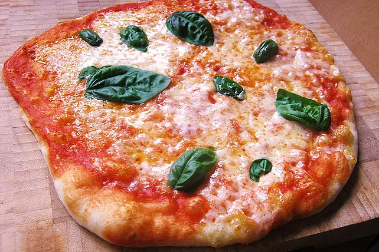

Pizza

Beschreibung
- 500g Weizenmehl
- 20g frische Hefe
- 10g Salz
- 50ml Olivenoel
- 320ml Wasser
- 3EL Tomatenmark
- 6EL Tomaten(pueriert)
- 2 TL Oregano
- Salz,Zucker,Chili
- Bueffelmozzerella
- Vorbereitung:
Den Ofen auf 250 °C vorheizen. Wird ein Pizzastein (Brotbackstein) benutzt, muss dieser 1 Std. vorher aufgeheizt werden.
- Die Hefe mit den Fingern in das Mehl reiben, als würde man Streusel zubereiten. Das Salz, Olivenöl und Wasser zugeben und alles zu einem Teig verarbeiten. Der Teig kann per Hand geknetet werden, dabei nicht beirren lassen, da er am Anfang wirklich sehr klebt und man nicht wirklich an einen Erfolg glaubt. Wer es lieber mag, kann den Teig auch mit dem Knethaken zubereiten. Der Teig muss insgesamt 5 - 10 Minuten geknetet werden.
- Den Teig 1 Stunde oder über Nacht im Kühlschrank(!!!) ruhen lassen.
- Zubereitung:
Für die Tomatensauce alle Zutaten zusammen mixen. Die Konsistenz sollte dabei recht dick sein. Wenn zu dünn, mehr Tomatenmark. Wenn zu dick, mehr passierte Tomaten.
- Teig aus dem Kühlschrank nehmen und in 3 gleichgroße Stücke teilen und zu Kugeln formen. Nochmals 10 Minuten gehen lassen. Arbeitsfläche mit Mehl bestäuben und Kugeln darauflegen.
- Auf die Mitte eines Teigbällchens den Handballen auflegen und den Teig vom Körper wegdrücken, so dass er gestreckt wird. Teig drehen und erneut wegdrücken. Das Ganze solange wiederholen, bis er annähernd rund ist (klappt nie ganz perfekt) und einen Durchmesser von 20 - 22 cm hat. Am Rand sollte der Teig einen Tick dicker sein.
- Pizzaböden auf einen mit Mehl bestäubten Holzschieber legen und mit der Tomatensauce bestreichen.
- Für eine Margherita die Pizza folgendermaßen belegen: 5 Scheiben Büffelmozzarella, frisches Basilikum, in die Mitte eine Olive, frisches Olivenöl dünn(!) darüberträufeln. Der Teig kann aber auch nach Belieben anders belegt werden. Wichtig ist nur: nicht zu dick! Weniger ist mehr.
- Belegte Pizza auf den Pizzastein schieben (zur Not geht auch ein normales Backblech, das mit Olivenöl eingestrichen wurde).
- 8 - 12 Minuten backen bei 240 °C.